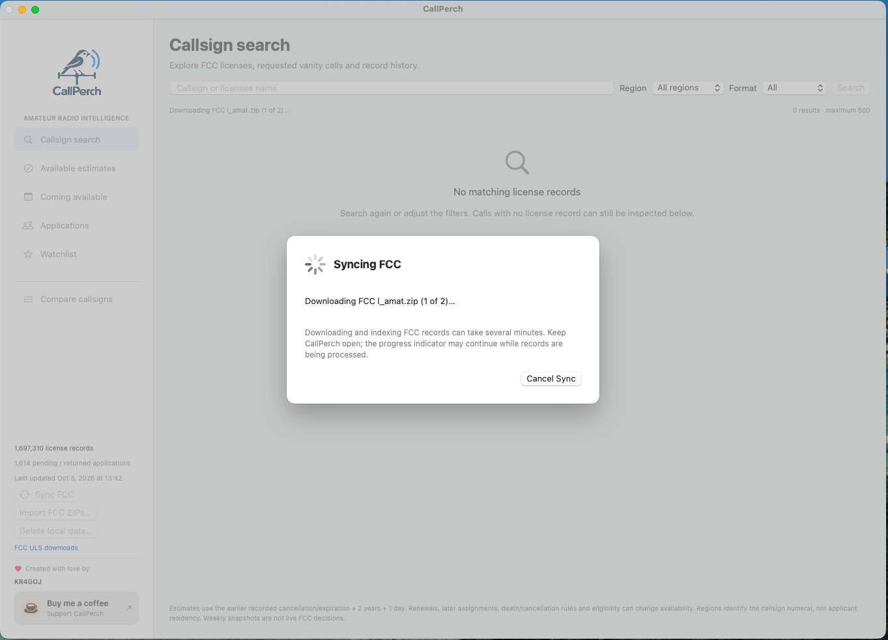
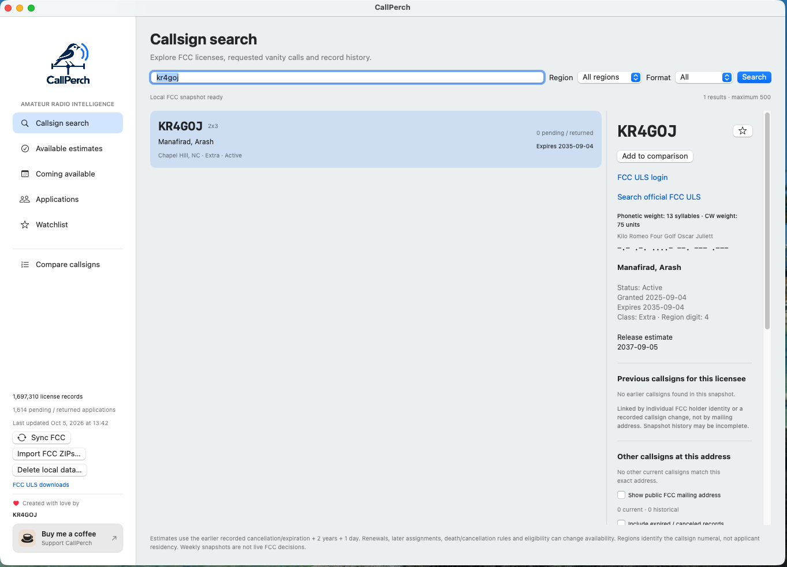
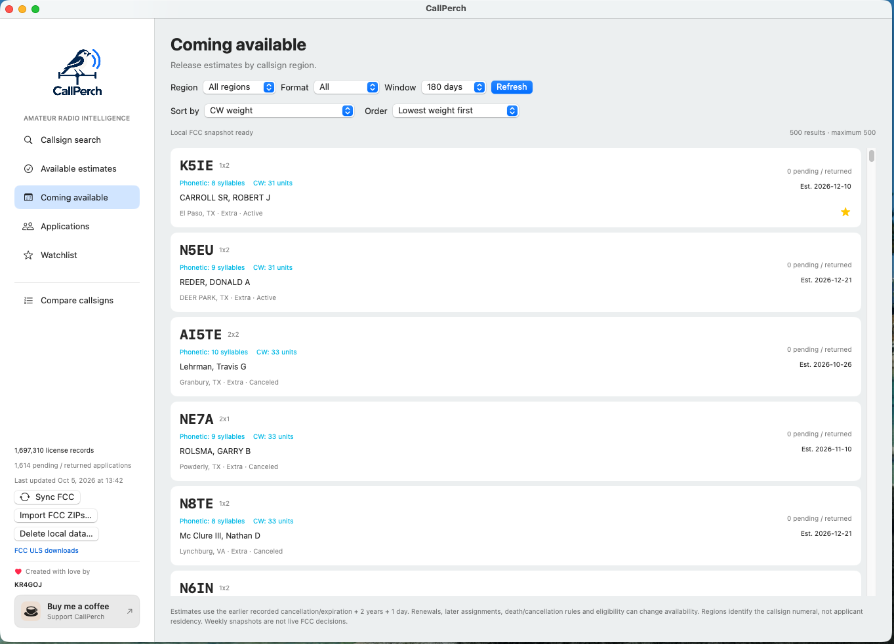
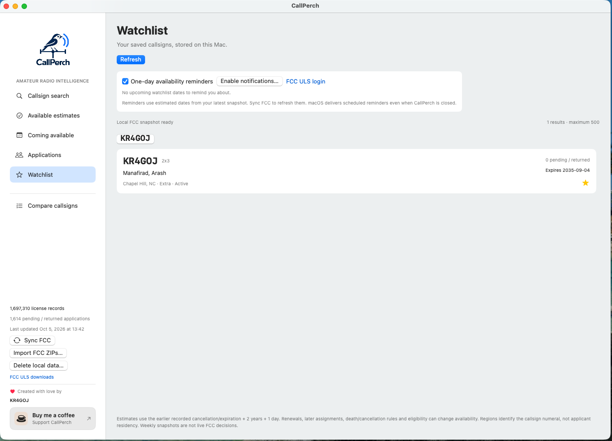

Your first session
Getting started
Go from your first FCC sync to a shortlist of callsigns.
Screenshots show CallPerch 1.3.1 for macOS. Appearance and notification behavior vary by platform.
1. Install and open CallPerch
Visit GitHub Releases, select a package for your platform, and follow its release instructions. The Mac app requires macOS 12 or newer. Packaged builds include the data engine; no API key or account is needed.
2. Load the FCC records
Select Sync FCC. The initial download is about 500 MB, and downloading and indexing can take several minutes. Have at least 12 GiB of free storage and keep the app open until the operation completes.
The progress window shows the current stage. Cancel Sync safely stops the operation; a failed or canceled refresh preserves your previous snapshot. Select Done after reviewing the result.

Prefer to import ZIP files?
Download the FCC license archive and application archive. Select Import FCC ZIPs… and choose both archives.
3. Search and inspect a callsign
Open Callsign search, enter a callsign or licensee name, and select a result. Review its license dates, applications, requested choices, and assignment history.

4. Explore availability estimates
Open Available estimates for previously assigned calls beyond their estimated waiting period, or Coming available for upcoming dates. Narrow results by numeral region, callsign format, and date window. Sort by estimated date or CW weight.

5. Save your favorites
Star a callsign to add it to your Watchlist. On Mac, allow notifications and enable one-day reminders to receive an alert at 9 AM local time on the day before an estimated release. Notification behavior varies by platform; Windows reminders require the app to be open.

Sync regularly: reminders use your current snapshot, and FCC data does not update automatically while the app is closed.
6. Compare your shortlist
Choose Add to comparison in callsign details, or open Compare callsigns in the sidebar. Add up to ten calls, adjust priorities, try audio playback, and save a named comparison or export it as CSV.